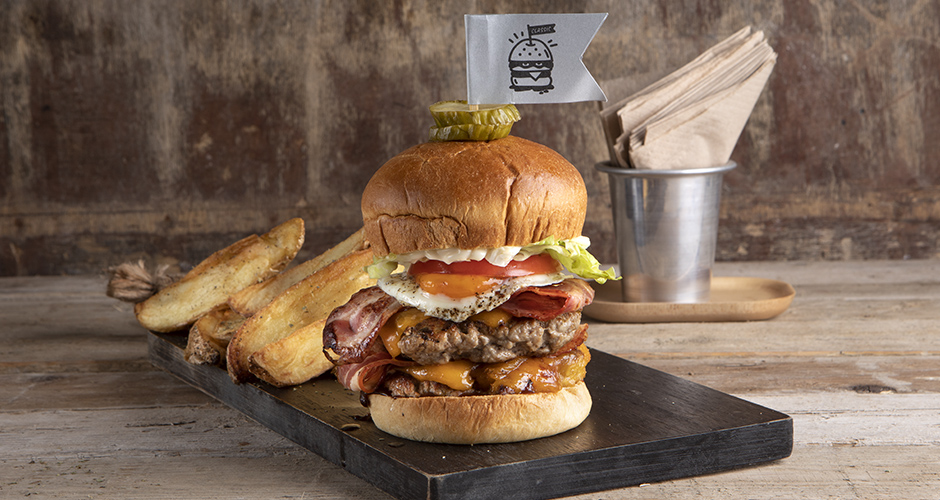

Hangover Burger

Ingredients
For the burger patties:
- 50 g butter, ice-cold
- 500 g ground beef
- salt
- pepper
- 8 slices cheddar
- 8 slices bacon
To assemble:
- 2 burger buns
- 2 tablespoons BBQ sauce
- 2 eggs
- 2 tablespoon(s) olive oil
- 2 slices tomato
- 100 g iceberg lettuce
- 2 tablespoon(s) mayonnaise
- salt
- pepper
To serve:
- pickled cucumber
- french fries
Recipe
For the burger patties:
- Place a frying pan over high heat.
- Sprinkle the butter over the ground beef, add salt and pepper, and knead well. Divide into 4 patties,
about 120-140 g each, and put them in the hot pan.
- Press them with a spatula and cook them for 1-2 minutes. Flip the patties over and put 2 slices of
cheddar on top of each one.
- Cook them for 1-2 minutes. Optionally, you can add 50 g of water into the pan, cover it with a lid, and
cook for 30 seconds. Remove the patties and set them aside.
- Place another frying pan on heat and add the bacon. Cook it for 2-3 minutes on both sides and place it
on top of each patty.
- Cut the burger buns in half and put them in the pan. Let them turn nicely golden and remove from the
heat.
To assemble:
- Place a frying pan over medium heat and add the olive oil. Add the eggs and fry them. Remove and set
aside.
- Spread the bbq sauce over the bottom buns and place 2 patties with the cheese and the bacon on top.
- Place one egg and 1 tomato slice on top of the patties.
- Spread the mayonnaise over the top buns, add the iceberg lettuce, and place the top buns to assemble the burgers.
- Serve with the pickled cucumbers and French fries.